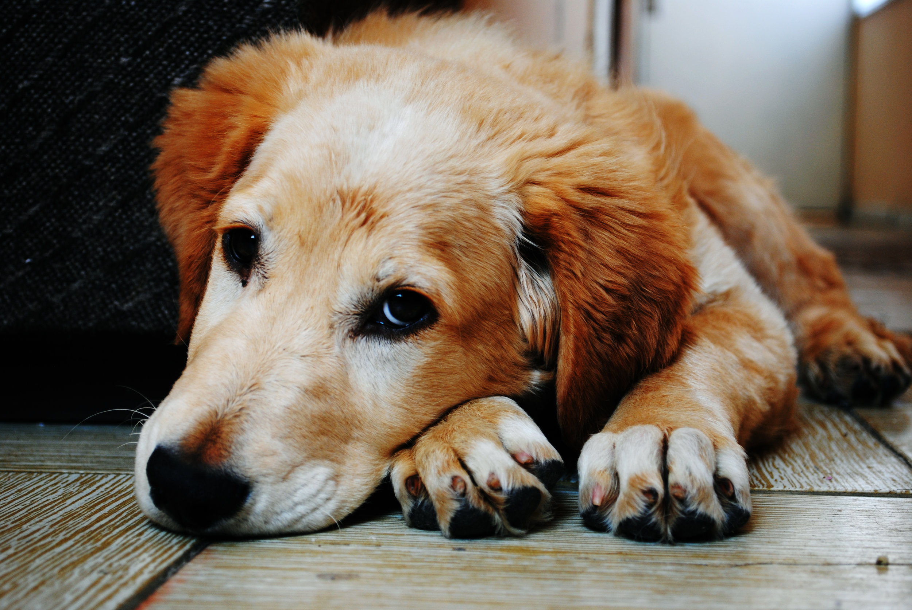

They can't live without your little help😔



Your donations can help us to support dogs and cats affected by parasites, ensuring they receive necessary treatments and medications. With your support, we can also provide
preventive care measures such as vaccinations and regular check-ups, safeguarding their health and well-being. By contributing, you enable us to create a safe and nurturing environment where these animals can thrive free from the burden of parasites. Together, we can give them the chance to lead happy, healthy lives filled with love and care.
Support our cause by participating in our survey-based donation initiative! Your contribution matters: for each survey completed, a donation will be made to provide food, shelter, and
medical care for homeless cats and dogs. By simply sharing your opinions, you're making a direct impact on the lives of these animals in need. Join us in transforming compassion
into action. Start filling out surveys today and help us make a difference, one question at a time!
Support our effort to provide nutritious meals to sheltered cats and dogs. Your donation helps ensure these animals never go hungry, providing them with the nourishment they need to stay healthy and strong. Every meal counts in their journey to finding a loving family.
Help provide a safe haven for homeless cats and dogs. Your donation ensures these animals have a warm shelter, medical care, and love while they wait for their forever homes. Together, we can give them a second chance at happiness.
Support our furry friends! Your donations will help provide essential care and happiness to cats and dogs in need. Together, we can make a difference in the lives of more animals.
Make a difference in the lives of homeless cats and dogs through our innovative survey-based donation initiative! Your participation directly translates into life-changing support for these animals. With each survey completed, you provide essential resources like shelter, nutritious meals, and medical care that are crucial for their well-being and chance at a better life.
Your contribution through surveys isn't just answering questions—it's offering hope and a brighter future to animals in need. Join us today in giving these animals the care and compassion they deserve.

Join our mission to save lives through our unique survey-driven support program! Every survey completed means critical assistance for homeless cats and dogs. From providing shelter and nourishment to ensuring medical care and rehabilitation, your participation directly impacts their survival and well-being.
Your voice matters, and each survey you complete helps us ensure these animals receive the care and love they urgently need. Take action today and be a lifeline for animals in crisis. Together, we can make a profound difference in their lives!
Donate Now